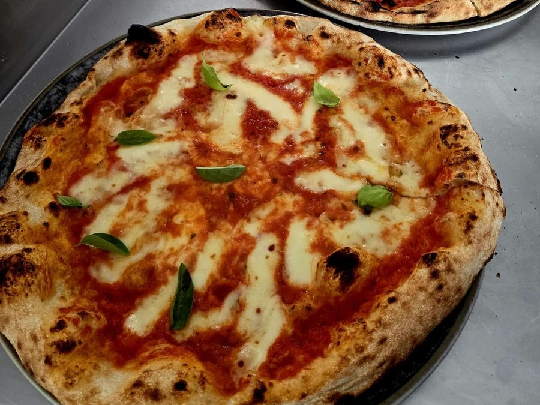

👥 Community
✕

1. Tocca l'icona Condividi (il quadrato con la freccia in su) nella barra di Safari.
2. Scorri e scegli "Aggiungi alla schermata Home".
3. Tocca "Aggiungi" in alto a destra. Fatto — l'icona apparirà sulla tua home.
L'idratazione che scegli deve essere sostenuta dalla forza della farina, indicata dal valore W (misura quanta acqua può assorbire e quanto regge la fermentazione). Più alta è l'idratazione o più lunga la maturazione, più forte deve essere la farina.
Il valore W raramente è scritto sulle confezioni del supermercato — ma le proteine (indicate sempre in etichetta, per 100g) sono un buon indicatore pratico:
Regola pratica: se l'impasto ti risulta troppo debole o si "sfalda" durante la lievitazione lunga, il problema spesso non è la ricetta — è la farina troppo debole per quell'idratazione/tempo.
Menu, card e sezioni sono tradotti. Lezioni, ricette e video restano in italiano per ora.
Ogni impasto, qualunque ricetta tu segua, è fatto di 4 ingredienti: farina, acqua, lievito, sale. Il motivo per cui due persone con la stessa ricetta ottengono risultati diversi non è la ricetta — è che non capiscono cosa fa davvero ognuno di questi 4 elementi.
Farina — non è tutta uguale. La sua "forza" (il valore W) determina quanta acqua può assorbire e quanto reggerà una fermentazione lunga. Una farina debole con un'idratazione alta o una maturazione di 48h semplicemente collassa.
Acqua — non è solo un ingrediente, è la variabile che decide la struttura finale dell'impasto: più ne aggiungi, più l'impasto sarà alveolato e leggero, ma anche più difficile da gestire.
Lievito — la quantità non è fissa: dipende da quanto tempo vuoi far maturare l'impasto e a che temperatura. Meno lievito e più tempo danno sempre un sapore e una digeribilità migliori rispetto a tanto lievito e poco tempo.
Sale — non serve solo per il sapore: rallenta la fermentazione e rinforza la maglia glutinica. Per questo va sciolto con attenzione e mai a contatto diretto con il lievito fresco.
Una volta che capisci come questi 4 elementi si influenzano a vicenda, non avrai più bisogno "dell'ennesima ricetta" — saprai correggere qualsiasi impasto, con qualsiasi farina tu abbia in casa.
L'idratazione è semplicemente il rapporto tra il peso dell'acqua e il peso della farina, espresso in percentuale. Un impasto al 60% significa 600g di acqua ogni 1kg di farina.
Più alta è l'idratazione, più l'impasto sarà appiccicoso e difficile da gestire mentre lo lavori — ma il risultato in cottura sarà una mollica più alveolata e leggera. Più bassa è l'idratazione, più l'impasto è facile da maneggiare, ma il risultato tende a essere più compatto.
Non esiste un'idratazione "giusta in assoluto": dipende dalla farina che hai (una farina debole non regge idratazioni troppo alte), dal forno che usi, e da quanta esperienza hai nel gestire impasti più bagnati. Chi inizia fa bene a partire da idratazioni più basse e ad alzarle gradualmente con la pratica.
⚠️ Attenzione: se impasti con la planetaria, non scendere mai sotto il 60% di idratazione — un impasto troppo asciutto affatica il motore e può danneggiarlo. Le idratazioni più basse si affrontano solo a mano, e solo con esperienza.
Autolisi: si mescolano solo farina e acqua e si lasciano riposare 20-60 minuti prima di aggiungere lievito e sale. Questo riposo permette alla farina di idratarsi completamente da sola, sviluppando glutine senza bisogno di impastare tanto — il risultato è un impasto più estensibile e più facile da lavorare.
Fermentazione e maturazione: la fermentazione è l'attività del lievito (produce gas, l'impasto cresce); la maturazione è il processo — più lento — in cui gli enzimi della farina scompongono amidi e proteine, rendendo l'impasto più digeribile e saporito. Una maturazione lunga (24-72h in frigo) migliora entrambe le cose, ma solo se la farina che usi è abbastanza forte da reggerla.
La temperatura è la variabile che comanda su tutto: stessa ricetta, stesso lievito, ma a 18°C l'impasto matura molto più lentamente che a 24°C. Non esiste un tempo fisso valido sempre — esiste un tempo valido per la tua temperatura specifica. Per questo il Calcolatore dell'app chiede la temperatura ambiente: serve proprio ad aggiustare le dosi di lievito di conseguenza, invece di seguire un numero uguale per tutti.
Stesura: mai il mattarello — schiaccia la maglia glutinica e fa perdere tutta l'aria che si è formata durante la lievitazione. Si lavora con le dita, partendo dal centro verso i bordi, lasciando il cornicione intatto e più spesso, girando il disco man mano che si allarga.
Il problema del forno di casa: un forno domestico arriva al massimo a 250-280°C, contro i 450-500°C di un forno a legna. Questo significa tempi di cottura molto più lunghi (8-12 minuti contro 60-90 secondi) e un risultato diverso, più simile a una pizza in teglia che a una napoletana da pizzeria — ed è normale, non è un errore tuo.
Come ottenere il massimo: usa una pietra refrattaria o un acciaio per pizza, preriscaldali per almeno 45-60 minuti alla massima temperatura del forno, e se il tuo forno ha la funzione grill, usala negli ultimi 1-2 minuti per colorire la superficie senza seccare troppo la base.
Quando è pronta: il cornicione è gonfio e con macchie di colorazione (non uniformemente bruno, a chiazze), la base è asciutta e non flette se sollevata con la pala.
Impasto troppo lavorato — impastare troppo a lungo scalda l'impasto e rovina la maglia glutinica invece di rinforzarla. Basta lavorarlo fino a quando diventa liscio ed elastico, non oltre.
Farina sbagliata per l'idratazione scelta — usare una farina debole per un impasto molto idratato o a lunga maturazione: l'impasto si sfalda e non regge la struttura.
Forno non abbastanza caldo (o non preriscaldato abbastanza) — molti accendono il forno solo 10-15 minuti prima. La pietra/l'acciaio hanno bisogno di 45-60 minuti per accumulare calore davvero.
Stesura troppo aggressiva — schiacciare tutto il bordo o usare il mattarello elimina l'aria che serve per un cornicione alto e alveolato.
Sale a contatto diretto col lievito fresco — il sale, se tocca direttamente il lievito prima che sia sciolto nell'impasto, ne rallenta o blocca l'attività.
Ignorare la temperatura — seguire tempi di lievitazione "standard" senza considerare quanto è calda o fredda la propria cucina, con il risultato di impasti sotto o sovra-maturati.
Cos'è la biga: è un pre-impasto — si mescola solo una parte della farina totale con acqua e pochissimo lievito, e si lascia maturare a lungo (16-48h) a temperatura fresca (16-18°C), prima di unirla al resto degli ingredienti per fare l'impasto finale. Il vantaggio: più forza, più struttura e più sviluppo di aromi rispetto a un impasto diretto, con meno acidità rispetto a un poolish.
Quando si parla di "biga al 50%", "al 70%" o "al 100%", ci si riferisce a quanta farina totale della ricetta viene messa nella biga rispetto al totale — il resto della farina (e dell'acqua) si aggiunge dopo, nell'impasto finale.
Biga al 50%: metà della farina totale va nella biga. È l'approccio più equilibrato — dà già più struttura e sapore rispetto a un impasto diretto, ma resta relativamente facile da gestire per chi ha meno esperienza con le bighe.
Biga al 70%: la maggior parte della farina matura nella biga. Il risultato è un impasto finale con molta più forza e alveolatura, ma richiede più attenzione: la biga deve essere fatta bene (idratazione bassa, 44-50%, giusta per restare "a blocchi" e non collassare) e la fase di impasto finale va gestita con cura per reincorporare bene la restante farina.
Biga al 100%: tutta la farina della ricetta matura nella biga — in pratica l'impasto finale consiste solo nell'aggiungere acqua, sale (e lievito se serve) alla biga già maturata. Dà il massimo in termini di struttura, alveolatura e sviluppo aromatico, ma è anche il metodo più delicato: richiede una farina forte, una biga fatta con precisione, e più esperienza per gestire l'impasto finale senza romperne la struttura.
Regola pratica: più alta è la percentuale di biga, più il risultato finale sarà "importante" (alveolatura, sapore, struttura) ma anche più difficile da eseguire bene. Chi inizia con la biga fa bene a partire dal 50% e salire gradualmente, esattamente come per l'idratazione.
Una selezione curata di video da pizzaioli ed esperti riconosciuti — uno per ogni stile. Ogni video è di proprietà del canale originale, con link diretto per guardarlo su YouTube.
🇮🇹 I video sono in lingua italiana.
♡Ingredienti: farina 00, 500g · acqua, 325ml (65% idratazione) · sale, 12g · lievito di birra fresco, 2g (o 0,7g secco)
Procedimento: impastare fino a ottenere un composto liscio ed elastico. Puntata di 2h a temperatura ambiente, poi 18h in frigo. Staglio in palline e appretto (riposo finale) di 4h a temperatura ambiente prima di stendere e infornare: in tutto 24 ore.
Stessa base dell'impasto classico, ma con meno lievito e una maturazione più lunga in frigo (48h invece di 24h) per uno sviluppo di sapore più profondo e una digeribilità migliore.
Questa è la stessa ricetta del PDF "Impasto Perfetto 48h" già in vendita — qui la trovi integrata direttamente nell'app.
Condimento: pomodoro San Marzano schiacciato a mano, un pizzico di sale, un filo d'olio. Mozzarella fior di latte (o bufala), scolata bene prima di essere usata per evitare che rilasci troppa acqua in cottura. Basilico fresco, aggiunto solo dopo la cottura per mantenerlo profumato e verde.
Pensata per chi non ha una pietra refrattaria: idratazione più alta (75-80%), impasto steso direttamente in teglia unta d'olio, ideale per un forno domestico normale. La consistenza finale è più simile al pane, alveolata e leggera.
Base bianca, senza pomodoro: crema di parmigiano, mozzarella fior di latte, e una generosa lamellatura di tartufo (o crema al tartufo) aggiunta a fine cottura, quando il calore ne esalta l'aroma senza disperderlo.
Pomodoro, nduja calabrese sbriciolata, mozzarella. Dopo la cottura si aggiungono burrata fresca e un filo di miele: il contrasto piccante-dolce-cremoso è il punto forte di questa ricetta.
Crema di zucca al posto del pomodoro, salsiccia sbriciolata, provola affumicata, una spolverata di rosmarino. Ricetta stagionale, perfetta per l'autunno e l'inverno.
La pizza si cuoce da sola, poi si farcisce e si piega a metà come un panino — perfetta da mangiare in mano, comoda per l'asporto o un pranzo veloce.
Farcitura: prosciutto crudo, rucola fresca, scaglie di grana o mozzarella filante. Si farcisce subito dopo la cottura, mentre la base è ancora calda, così il crudo e la rucola restano freschi a contatto con il caldo della pizza.
Base bianca con una crema leggera al curry al posto del pomodoro, bocconcini di pollo, peperoni, cipolla e broccoli. Una ricetta fuori dagli schemi classici, con un tocco speziato che sorprende.
Un percorso pensato per crescere un passo alla volta — segui l'ordine e costruisci le basi prima di complicarti la vita:
Tocca ogni passo per andare direttamente lì.
Pizza Perfetta a Casa nasce da anni di pizza fatta ogni settimana, tra esperimenti, impasti riusciti e altri buttati via.
L'idea non è darti "l'ennesima ricetta" da copiare — è insegnarti i principi che stanno dietro ogni impasto, così puoi correggere, adattare e migliorare da solo, con qualsiasi farina o forno tu abbia in casa.
Maria & Davide
Nota: per ora i preferiti si salvano solo per questa sessione — con un vero account si potranno mantenere tra un accesso e l'altro.
Crea un account gratuito per salvare i tuoi progressi e i tuoi preferiti in modo permanente.
Hai trovato un errore, una dose sbagliata, o hai un suggerimento? Scrivilo qui — arriva direttamente a Davide.
Questo contenuto è riservato agli abbonati
Con l'abbonamento Premium sblocchi la Biga, tutte le ricette gourmet, il Calcolatore completo, i video curati e la Community — nuovi contenuti ogni mese.